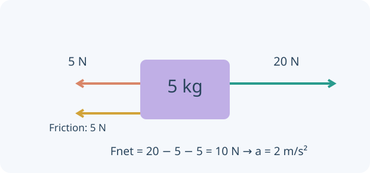

Forces and dynamics
Pull a trolley, test friction, release a block on a slope and connect two masses with a light string.

Build the idea, one step at a time.
A force is an interaction acting on a chosen object. Draw only those interactions in its free-body diagram, not a force called motion. Weight is gravitational force, mass measures inertia, and contact forces depend on the surroundings. Newton’s third-law partners act on different objects.
Acceleration follows the vector sum of forces, Fnet = ma. Zero net force means constant velocity, which can be nonzero. Static friction adjusts up to a limit, while kinetic friction models sliding. On an incline, resolve forces relative to the surface. For connected bodies, consistent system boundaries and shared motion constraints help organise the equations.

01 · Newton’s laws
A zero resultant force means constant velocity, including rest. For constant mass, resultant F = ma. Interaction forces are equal and opposite but act on different bodies, so they do not cancel on one body’s free-body diagram.
02 · Mass, weight and diagrams
Mass is measured in kg; weight W = mg in N. The normal force is perpendicular to the contact surface. It need not equal weight: on an unaccelerated slope without other perpendicular forces, N = mg cosθ.
03 · Static and sliding friction
Static friction adjusts up to μsN. Sliding friction is modelled as μkN opposite relative sliding. For simplicity these investigations use one selected coefficient as both μs and μk. If the available driving force is below the static limit, the block stays at rest.
04 · Inclined planes
Resolve weight into mg sinθ down the slope and mg cosθ into the surface. For downhill sliding, a = g(sinθ − μ cosθ); use the static limit before deciding that it slides.
05 · Connected bodies
A light, inextensible string over a frictionless massless pulley gives equal acceleration magnitudes and equal tension on both sides. Analyse each body separately and the system together. Tension is usually not equal to the hanging weight during acceleration.
You can read these explanations without operating the simulator. The practical activities, games and revision below let you apply the ideas and check your reasoning.
Now investigate →Predict. Investigate. Explain.
Preparing the apparatus…
Choose an investigation, then follow the steps.
Starting stories and prediction · one clock, two objects
Compare a head start in position with a delayed release. B waits at its starting position until its start time.
Record and compare your results.
Up to 10 trials per investigation, kept while this page is open. Reloading clears the notebook. These practical notes and lesson checks are not sent to the teacher.
Check your understanding
Connect the model to the physics
Newton’s laws
A zero resultant force means constant velocity, including rest. For constant mass, resultant F = ma. Interaction forces are equal and opposite but act on different bodies, so they do not cancel on one body’s free-body diagram.
Worked example. A 2 kg trolley pulled by 6 N on a frictionless track accelerates at 3 m/s². Its weight and normal force balance vertically.
Mass, weight and diagrams
Mass is measured in kg; weight W = mg in N. The normal force is perpendicular to the contact surface. It need not equal weight: on an unaccelerated slope without other perpendicular forces, N = mg cosθ.
Worked example. A 5 kg mass has weight 49.05 N on Earth. Draw only forces acting on the chosen body. Arrow lengths share a scale within each diagram.
Static and sliding friction
Static friction adjusts up to μsN. Sliding friction is modelled as μkN opposite relative sliding. For simplicity these investigations use one selected coefficient as both μs and μk. If the available driving force is below the static limit, the block stays at rest.
Worked example. A 2 kg block with μ = 0.30 can remain at rest against a 4 N pull because μN ≈ 5.89 N; friction is then 4 N, not 5.89 N.
Inclined planes
Resolve weight into mg sinθ down the slope and mg cosθ into the surface. For downhill sliding, a = g(sinθ − μ cosθ); use the static limit before deciding that it slides.
Worked example. At 30° with μ = 0.20, a ≈ 3.21 m/s² down the slope. Mass cancels from this ideal expression.
Connected bodies
A light, inextensible string over a frictionless massless pulley gives equal acceleration magnitudes and equal tension on both sides. Analyse each body separately and the system together. Tension is usually not equal to the hanging weight during acceleration.
Worked example. For a 3 kg trolley and 1 kg hanging mass with no friction, a = 9.81/4 ≈ 2.45 m/s² and tension ≈ 7.36 N.
Classroom connections
Use the apparatus model to test a prediction, record two trials with one changed condition, then explain the difference with an equation or diagram. Use your teacher’s worksheets for assessed tasks. The revision simulator below offers practice, mixed questions and a Test yourself mode.
Try it. Solve it. Play again.
Force Bureau and Tugboat Targets: move cards, build a model and use feedback to work out the next step.
Ready to test your understanding?
Choose from 60 questions on forces and dynamics. Select question areas and levels, practise with explanations or take a Test yourself quiz, then retry mistakes.